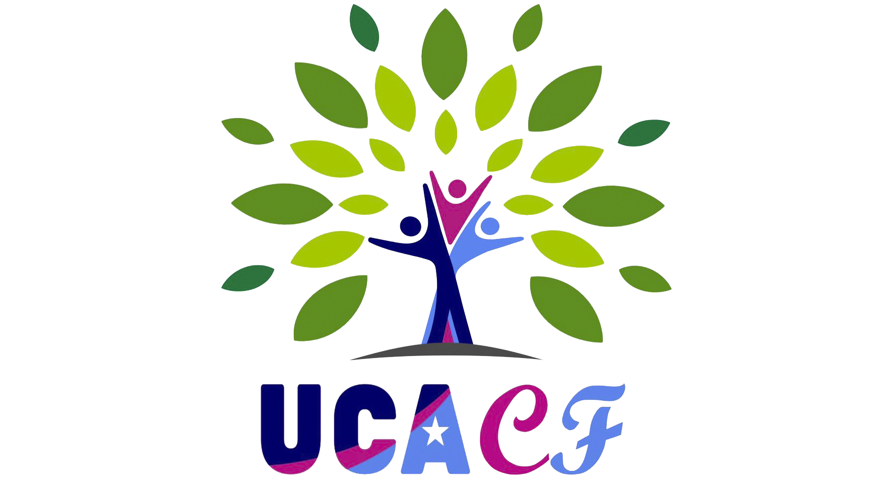

EVENT

UCACF四月通讯 | UCACF April Newsletter
In March, UCACF hosted its 2026 Grant Information Session, providing a comprehensive overview of the application process, evaluation criteria, and funding priorities.